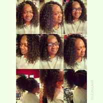
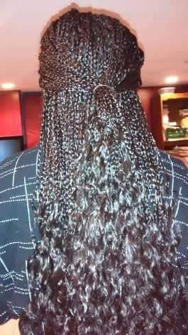
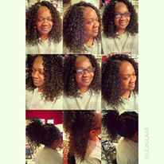
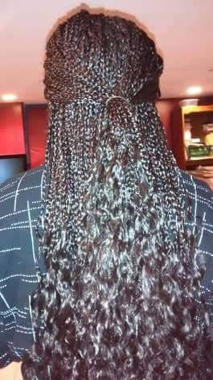

Sew-Ins- Sew-ins are a type of hair extensions that is sewn onto your real hair.Sew-ins are used as a protective style.
Crochets- There are many different types of crochets.Crochets are another type of hair extension that are literally crocheted into your hair braided into cornrows with a latch hook tool.